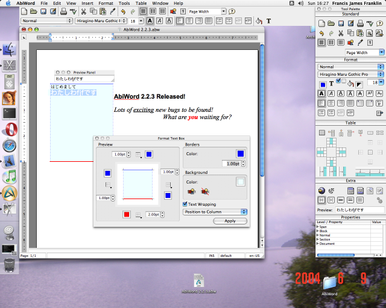
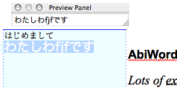
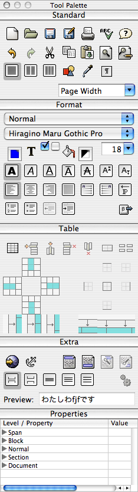
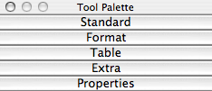

AbiWord 2.4
Cocoa version for MacOSX.
| Introduction |
| License |
| Guide |
| Templates |
| Language |
| Dictionaries |
A Quick Guide to AbiWord for MacOSX
Below is a screen shot of AbiWord showing two of the four toolbars, the Tool Palette panel which can be used as an alternative (or an addition) to the toolbars, the Preview Panel which shows preliminary input text for Chinese / Japanese / Korean input methods, and of course an AbiWord document window.

The Preview Panel
If desired, the Preview Panel can be displayed using the switch in the Window Panels menu. There is another input preview box in the Extra panel of the Tool Palette. The Preview Panel can be widened, if desired. (My Japanese is close to non-existent, but I think I managed to write "Pleased to meet you. My name is fjf.")


The Tool PaletteThe Tool Palette can be displayed using the switch in the Window Panels menu (although visible at start-up, it can be hidden). The Tool Palette has a number of palettes that can be collapsed or expanded at will, thus you can have the normal start-up configuration (old-style palette with bordered buttons), or even:
{kind=link}

Standard
New, Open, Save, Save-As, Print, Spell-Check, Help
Undo, Redo, Cut, Copy, Paste, Search, Replace
1-Column, 2-Columns, 3-Columns, Insert-Image, Paint-Format, Show-Formatting
Zoom
Format
Document-Style
Font-Family
Foreground-Color, Background-Color, Font-Size
Bold, Italic, Underline, Overline, Strike-Through, Superscript, Subscript
Left-Justify, Center-Justify, Right-Justify, Even-Justify, Right-To-Left, Left-To-Right, Dominant-Direction
Numbered-List, Bullet-List, Decrease-Indent, Increase-Indent, Insert-Symbol
Table
Insert-Table, Insert-Row, Insert-Column, Delete-Row, Delete-Column, Merge-Cells, Split-Cells
(The rest don't currently do anything.)
Extra
Insert-Hyperlink, Insert-Bookmark (Anchor), Edit-Header, Edit-Footer, Remove-Header, Remove-Footer
No-Space-Before, 12pt-Space-Before, Single-Spacing, 1.5-Spacing, Double-Spacing, Execute-Script (status unknown)
Preview: alternative input-preview text - see Preview Panel above.
Properties
This gives a list of the internal properties associated with the current cursor location. This is primarily for development and debugging, and may be removed from release builds at some point.
This page is Copyright ©2004-2005 the AbiSource community. All rights reserved.
AbiSource, AbiSuite, and AbiWord are trademarks of Dom Lachowicz. All other product names, company names, or logos cited herein are property of their respective owners.
AbiWord is free software, subject to the GNU General Public License.